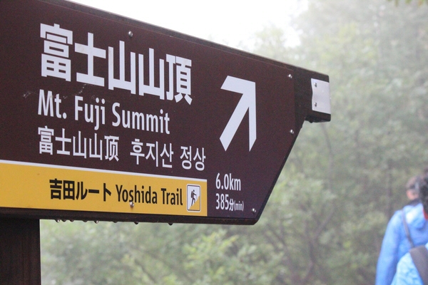

Fuji
Last weekend we made our trip to Fuji-san. Expecting an easy trip to the top like Takao-san had been, I left with a jacket, and a Camera (ofcourse forgetting to charge the battery before we left). Met Koiwa-san, his girlfriend Haru Mi san, Huw and Sam at Shinjuku station at 10. She is much more bubbly, outgoing and friendly than most Japanese people you meet.
Since we were going the day after the season ended, we had to take 2 trains and bus to reach there. Ate lunch at a restraunt at 河口湖 (Kawaguchigo). Their specialities included North Indian Curry, South Indian Curry and West Indian Curry. Then, took the bus to 五合目(Gogoume) - the 5th station and set of for the top, inspite of forcasts of cloudy weather and winds, and the threat of rain in the clouds, joking as our cheap 300円 raincoats tore.

In the beginning it seemed I was right - it was quite an easy walk up to past the sixth station. Then, a little ahead I saw lines of people - I assumed the were standing in line at a shop or something. As I got closer I realize they were waiting for their turn to start the real climb - scrambling amoung rocks in single file.
As we climbed, the weather got worse. By the time we reached our hut, a little past the 8th station in the rain and the dark, we were drenched, just shreds remaining of our raincoats. Though the weather was misrable and everyone knowing that the chances of reaching the top were pretty slim, I didn't hear a single person complain, everyone helpful and thoughtful about the others, and half-laughing statements about how cold it was.
When we reached our hut, we were greeted with an orientation - using the flush at the toilet cost 200円 to ration water. The 'Hut' was made with Japanese effiency - just confortable enough, but no more; warmed by everyones body heat heat and a smapp born fire. We slept in a giant bunk bed - each person had about 2 feet of room, a sleeping bag and a pillow on one of the 'floors' of the bunk. Each layer of the bunk was shared by about 20-30 people. There were people coming and going through the night.
Originally the plan was to leave the hut at 2AM and reach the top by sunrise (Around 4:30AM here, in the Land of the Rising Sun). Though the forecast said clouds, fog and wind, it rained through the night. Given that it was still 2-3 hours to the top, and not much of a view even if you reached, everyone decided to sleep through the night an leave at 6, once the Hut closed. Reached the bottom in around 2 hours, and ate a fuji-curry.